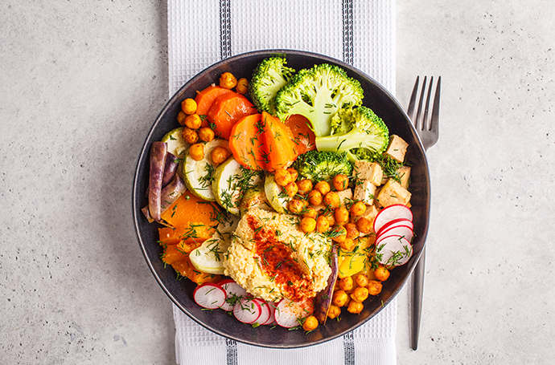

My special recipe
My special meal is jollof rice
Jollof rice, is a rice dish from West Africa. The dish is typically made with long-grain rice, tomatoes, onions, spices, vegetables and meat in a single pot, although its ingredients and preparation methods vary across different regions.The origins of jollof rice can be traced to the Senegambian region that was ruled by the Wolof or JolofEmpire in the 14th century, spanning parts of today's Senegal, The Gambia and Mauritania, where rice was grown. The dish has its roots in atraditional dish called thieboudienne, containing rice, fish, shellfish and vegetables.
| S/N | Ingredients | Measurements |
|---|---|---|
| 1 | Rice | 1 bowl |
| 2 | Fresh and canned tomatoes | 1 big bowl of fresh tomatoes |
| 3 | Varity of spices e.g salt, maggi, curry etc | 1 table spoon of spice for each |
JolofEmpire Recipe
- Wash and parboil the rice
- Blend your fresh tomatoes and pepper
- Add oil to your pot and heat alongside onions and pepper and the blended tomatoes
- Add animal any protein you desire
- After your sauce is ready add the parboiled rice and cook together
YUMMY YUMMY

SATISFY YOUR TASTEBUD

MOUTH WATERING
DELICIOUS GOODNESS